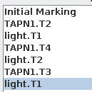
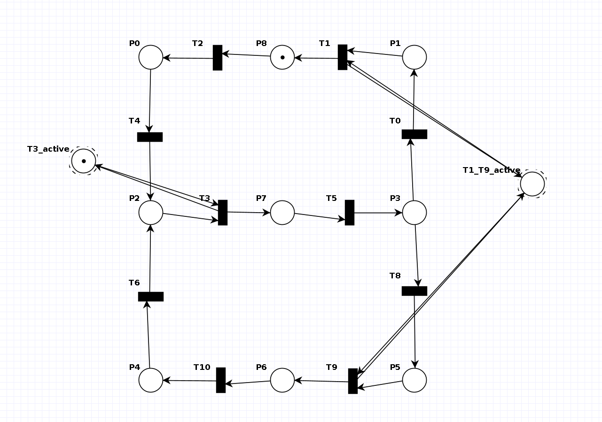
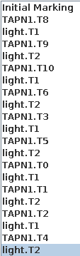
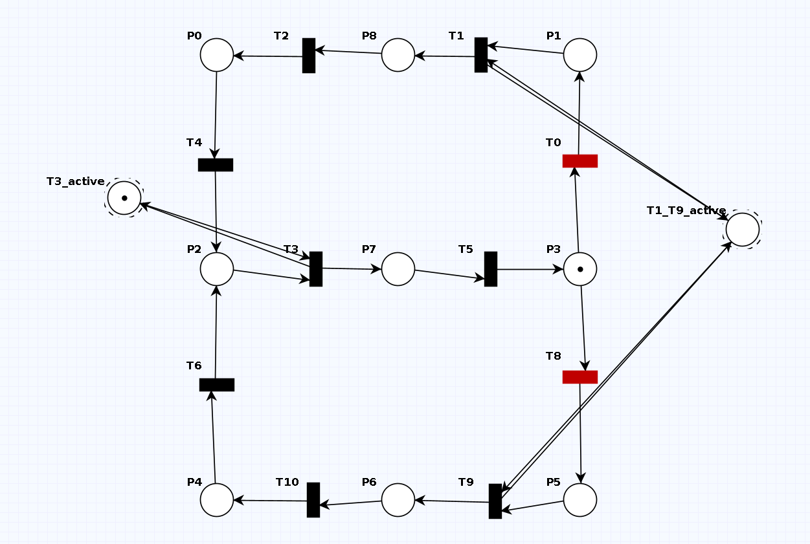
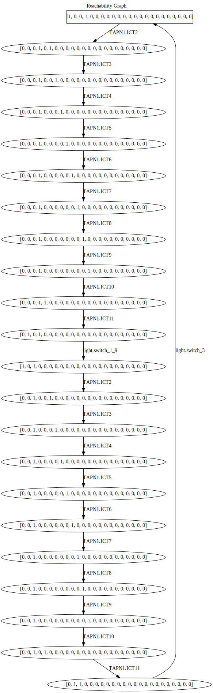

Assumptions
- Because there always needs to be a transition of a trolley, we assume that when a trolley is behind a red light. Therefore, we can never go to a next state.
Railroad system
To construct the railroad in TAPAAL we first have to understand how the tracks are laid out, How we understand it is depicted in this image.

The next step is to define our tracks as states and our trolleys as tokens, the transitions would indicate where the trolley can go to.
The lights can be modelled as two oscillating states, every step this transition then needs to be fired. We can then use this token as an input of the transition to the track with the light. We then need to return this token of course to keep the light going.
Insert image here
Traces
We can also generate interesting traces with our model. One of them is a trolley traveling for at least 2 tracks before passing through a light that is red when the trolley arrives there. Here is the trace and the initial setup.
 Another trace is for a trolley that travels in a single "8"-shape over the network, without ever seeing a red light. Again here are the traces and initial setups.
 Reachability/Coverability
The reachability graph for this model will be finite as there are a finite amount of valid states. There are a finite amount of states and there are either 0 or 1 tokens in a state. We can in fact calculate an upper bound which is 2^n with n being the number of states.
Below are, respectively, the reachability and coverability graphs. Both are finite as expected. The first pair is generated from a setup where no trolley is present. We can see the clock token going around and the light switching at the end of this sequence. After two lights have changed we return to the original.
We can also notice that the reachability and coverability graph are identical. This is due to the fact that the amount of tokens is bounded (by 1). Because of this we will omit the coverability graph.
We can also simulate two trolleys, starting on S1 and S6 Here the graph is not cyclic because we encounter a deadlock, we will probably discuss this setup more in a later exercise.

To make this graph infinite we could add one or more transitions to 'duplicate' trolleys. This would cause the amount of trolleys on each track to increase by one every lap, thus never returning to the same state. This of course violates the constraint that every track can only hold a single trolley.
File structure
The images generated for this assignment can be found in the image folder. Next the models contain the TAPAAL files, the first model is without a clock and the second one with one. Lastly the generated dot files by the python script can be found in the dot folder.
Invariant analysis
Generate the P-invariants for the model and explain what they mean in terms of the railroad.
M(T1_T9_active) + M(T3_active) = 1 M(TAPN1.S1) + M(TAPN1.S2) + M(TAPN1.S3) + M(TAPN1.S4) + M(TAPN1.S5) + M(TAPN1.S6) + M(TAPN1.S7) + M(TAPN1.S8) + M(TAPN1.S9) + M(TAPN1.buffer_3) + M(TAPN1.buffer_7) = 2 M(C1) + M(C12) + M(TAPN1.C10) + M(TAPN1.C11) + M(TAPN1.C2) + M(TAPN1.C3) + M(TAPN1.C4) + M(TAPN1.C5) + M(TAPN1.C6) + M(TAPN1.C7) + M(TAPN1.C8) + M(TAPN1.C9) = 1
Which invariants did you expect? Which ones are surprising? Why?
First and foremost, the invariant related to the clock variables makes the most sense. This is because there must be one token that goes round at all times. The second part is the light that switches between 2 different states, namely 'T1_T9_active' and 'T3_active'. So this invariant always should be equal to 1. Lastly, we have the invariant of the trolley track system, at all times the amount of trolleys should be equal to 2. Which is also written down by the invariant.
Can you add a single place or transition to the model that changes these invariants (for the better or the worse)? Your new model does not have to conform to the requirements.
M(T1_T9_active) + M(T3_active) = 1 M(TAPN1.S1) + M(TAPN1.S2) + M(TAPN1.S3) + M(TAPN1.S4) + M(TAPN1.S5) + M(TAPN1.S6) + M(TAPN1.S7) + M(TAPN1.S8) + M(TAPN1.S9) + M(TAPN1.buffer_3) + M(TAPN1.buffer_7) = 2
We used the infinite petri net solution in order to remove the invariant of the clock. It doesn't necessarily make the invariants better or worse, but just reduces it to 2. Because the clock now has an infinite amount of tokens which are being generated through the course of time.
Boundedness
Use one or multiple queries to check the boundedness of your net. You may use logic, reasoning and the already obtained P-invariants to simplify/minimize your queries. Is the result what you expected? Why (not)?
AG (TAPN1.S1 <= 2 and TAPN1.S2 <= 2 and TAPN1.S3 <= 2 and TAPN1.S4 <= 2 and TAPN1.S5 <= 2 and TAPN1.S6 <= 2 and TAPN1.S7 <= 2 and TAPN1.S8 <= 2 and TAPN1.S9 <= 2 and C1 <= 2 and TAPN1.C2 <= 2 and TAPN1.C3 <= 2 and TAPN1.C4 <= 2 and TAPN1.C5 <= 2 and TAPN1.C6 <= 2 and TAPN1.C7 <= 2 and TAPN1.C8 <= 2 and TAPN1.C9 <= 2 and TAPN1.C10 <= 2 and TAPN1.C11 <= 2 and C12 <= 2 and TAPN1.buffer_3 <= 2 and TAPN1.buffer_7 <= 2 and T1_T9_active <= 2 and T3_active <= 2)
For this part we suppose that we always use one token for the clock, two tokens to represent the trollies that go around and one token for managing the lights. The initial placement of the clock token will always be in C1, as for the light token we will put the token in T3-active.
The query described above is the query that can be used to detect a 2-bounded petri-net. The AG says that it needs to check the equation between braces for every trace of every possible combination of markings. The equation means the amount of tokens in each place should be smaller than 2. We only tested the initial marking and it checked out. It even could be said that that marking is considered safe in our petri-net.
Because it would take up too much time to check each configuration manually against the formulated query. In order to make this task much easier we could use the p-invariants. In essence they mean that the total amount of tokens in a set of places never exceeds a certain value. Therefore it means that we could put an upper bound for each set of places. If the union of these sets is the entire set of places then we can use the maximum of the p-invariant formulas. Then we can say that the petri-net is k-bounded, with k the aformentioned maximum of the p-invariant formulas. In this case the union of all the used places in the formulas equals to the total set of places, for that reason we can say that this petri-net is 2-bounded.
Deadlock
Use a query to find whether or not there is a deadlock in your net. What fireings cause this to happen? What does this mean for the railroad?
AF !(TAPN1.ICT2 or TAPN1.ICT3 or TAPN1.ICT4 or TAPN1.ICT5 or TAPN1.ICT6 or TAPN1.ICT7 or TAPN1.ICT8 or TAPN1.ICT9 or TAPN1.ICT10 or TAPN1.ICT12 or TAPN1.S6_buffer or TAPN1.buffer_3_S3 or TAPN1.buffer_S7 or TAPN1.buffer_7_S8 or TAPN1.S8_buffer_7 or light.switch_1_9 or light.switch_3 or TAPN1.S2_S1 or TAPN1.S3_S2 or TAPN1.S1_S4 or TAPN1.S4_S5 or TAPN1.S5_S6 or TAPN1.S6_S9 or TAPN1.S7_S4 or TAPN1.S9_S8)
In order to detect a deadlock in the system, we should have a situation where no transition is able to fire. Therefore, we use need to check if there is a trace where this is the case. This can be done by using the AF property. The equation that needs to be checked is to check the activeness of each transition in the system and or it to detect if at least one of them is active. Then we negate this whole expression to get to a marking that contains no transition that is active.
When we take the initial marking, we get the trace of the deadlock as pictured below. This means that when a trolley stands behind a red light while the clock tries to pass, the system will get in a deadlock. It won't be able to fire any new transitions.

If there is a deadlock, describe how you can modify your net to make it deadlock-free. Can you identify this deadlock in the Reachablity/Coverability graph?
We can make this net deadlock free, by allowing the clock to go around whenever there isn't any transition able to fire because of a red light. This means that we take an inhibitor arc from light and put it into a new transition T. We connect another arc from the clock place to T. From T we go to the next clock variable. In order to avoid T to be active when there isn't any trolley in the place before the light, we create an arc between T and the place and back. In order to see this clearly, we've supplied a support image below. The yellow parts are new. This is also written in this file.

We can identify this deadlock in the reachability graph by looking at the state which has no outgoing transitions. This means that there are no possible transitions to depart from when the petri-net is in that marking. The same counts for the coverability graph.
Liveness
Fairness
To achieve fairness we introduced the clock. The intention of this clock is to reduce the amount of possible transition to 1 so there is no non-determinism. Having multiple possible transitions is only allowed in cases of true randomness i.e. the split for the trolley.
Because the number of states is constant but the number of trolleys is variable we decided to update every state and move the trolley if it has one. Immediately the problem arises that when updating state 1 and moving the trolley to state 2, it is still possible to update state 2 later on and move the trolley twice. To avoid this we need a certain ordering where we go in a backwards direction so that when we update a state it can only contain untouched trolleys. The problem with this approach is that the track-graph has cycles and is not topologically sortable. So just updating every state, in any order, will not work. We notice this problem arises either at the split or join, so in our solution we solved this problem by introducing a buffer state which is updated last. we also have some logic to ensure ##TODO##!!!
It is important to notice we use a slightly alternate approach to the clock than described in the lecture notes. We opted to, instead of splitting and joining the clock token to have a cycle (read clock) granting the token to a certain transition and then returning it and going forward in the cycle.
##TODO##!!!
Safety
We believe trolleys cannot crash after the first complete lap. The explanation follows.
For the remainder of this exercise it's important to note in which cases trolleys can crash:
- Crashing into the trolley in front that is waiting for a red light.
- Merging together onto the same track.
In the simulation, when a trolley is right behind another one, it can happen that for that certain tick, the trolleys will be on the same square because one has been updated and the other one hasn't. We assume that this is an invalid 'in between' state and will not count those kinds of collisions.
Now if everything is working let us discuss the theoretical cases of trolleys in our system.
Let's start by examining the case where every track is occupied by a trolley. The trollies waiting for the red light will be rear ended by the other trolleys as they just move forward. As the period of the track is 6, meaning every rotation will be 6 steps and the period of the lights is 2 we can infer that a trolley either always has a green light or always a red light.
Because of the light being green only half the time the maximal throughput of a track is only 50%. This means that if we were to have only the upper part of the circuit we could maximally fit 3 trolleys because it is 6 tracks long. The following image illustrates why we need space between the trollies.

| * | ||
| * | ||
| * | * |